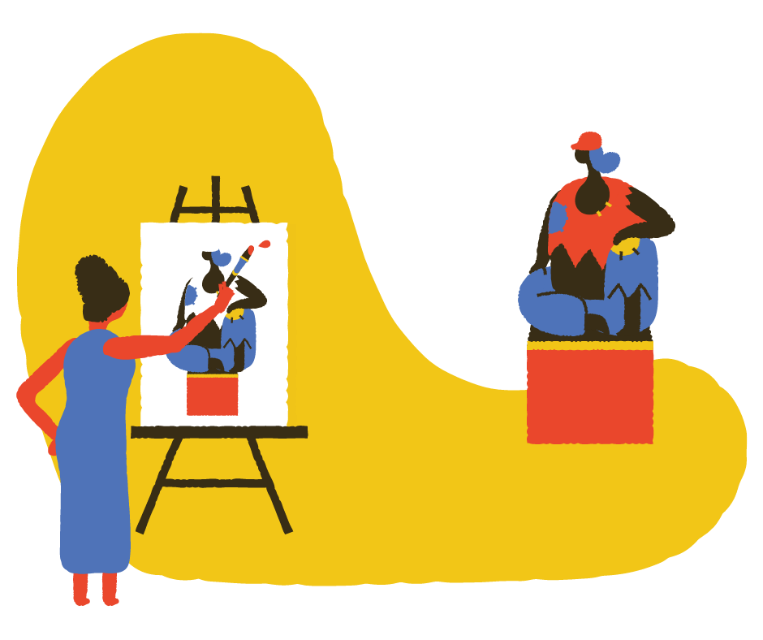
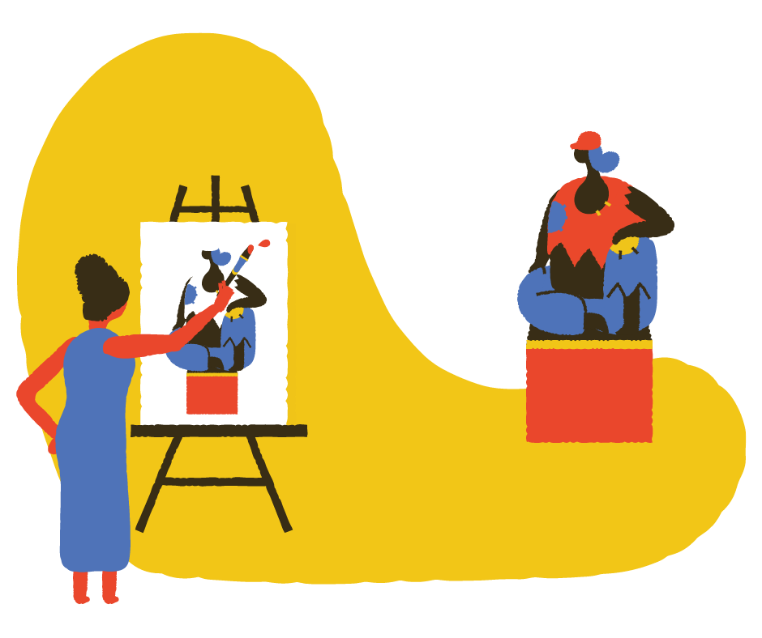

個人作品集
影像、圖像、文字


我是佩珊，這個頁面是我的作品集捷徑。從上往下滾動會先看到影片，再來是圖像，圖像包含了網站頁面的樣式編排，點擊標題字連結可以看其他繪畫性質的作品，最後則是文字。

臺灣禁止土葬已逾二十年，傳統興建墓碑、靈堂的祭祖形式也漸被現代化的納骨塔取代。文史學家視墓碑為研究當地移民史的重要線索，居民則認為其有礙觀瞻。公墓的存在與城市的發展，需要政府與人民、人民與人民不斷溝通協調。
每一年的農曆春節，無論是攤商店面、住家辦公場所，特定動物的身影就會常常出現－那便是該年的生肖。這樣活潑有趣的記年方式，不論是為了方便百姓記憶、或是來自神話寓意，現在已是不可缺少的新年元素。

兒童美術營是師大廣受好評的寒假營隊。由大二學生帶領大一學弟妹，從學期初一路準備到學期末，除舞蹈、戲劇的排演，亦須處理家長、孩子的情緒，以及理解準備教案和安排教學與活動的要領。此影片拍攝剪輯於營期間，並於大合照前播放，留下完美句點。
© peishan 2022.